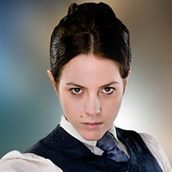

| Home | The Doctors | The Companions | The Villains |
|
|||
| cf
Jenny FlintMadame Vastra, Jenny Flint, and Strax (sometimes known as the Paternoster Gang, together with the Doctor)[1] are a trio of recurring fictional characters in the British science fiction television series Doctor Who, created by Steven Moffat and respectively portrayed by Neve McIntosh, Catrin Stewart and Dan Starkey. The three characters first appear in the sixth series episode "A Good Man Goes to War". Madame Vastra (a Silurian) and Jenny Flint (a human) are a couple. In later stories we see them living in London during the 19th century. Strax, a Sontaran, is on his first appearance a nurse caring for wounded soldiers on another planet. They are all recruited by the Eleventh Doctor to help him to save Amy Pond, but despite the success of the rescue, Strax apparently dies in the battle. He is, however, shown to be awakened by Vastra and Flint a couple of days later in the webisode "The Battle of Demons Run: Two Days Later",[2][3] and then became their butler in the 19th century. Since their first appearance, the trio have appeared various times to help the Doctor, even having a central role in the first half of "The Crimson Horror". They most recently appeared in "Deep Breath", the first episode starring the Twelfth Doctor. Steven Moffat has confirmed that they will not be returning in Series 9 and has said that it's unlikely they will return at any point in the future. They also have their own spin-off novella, Devil in the Smoke,[4] and the trio have appeared in several online "minisodes,"[3][5] with Strax additionally appearing in a series of "Field Report" videos posted to the Doctor Who website.[6] The three characters became popular with audiences, with the presence of an inter-species same-sex couple also leading to some attention.[ |